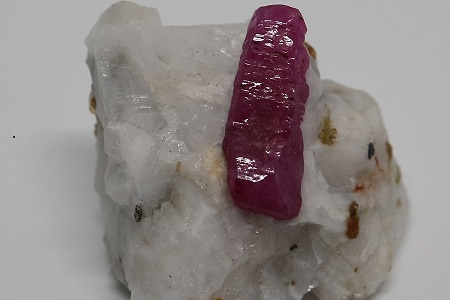
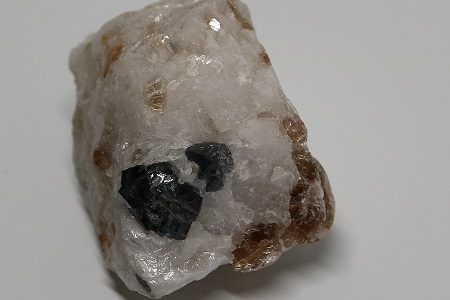
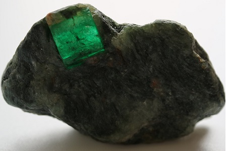

Gallery

Ruby
Ruby belongs to Corundum family of gemstones and ranges from Pinkish Red to Deep Red in color. It's hardness is second only to Diamond.
Find more

Sapphire
Sapphire belongs to Corundum family of gemstones. It's most sought-after color is Royal Blue, although it comes in almost all possible colors.
Find more

Emerald
Emerald belongs to Beryl family of gemstones. Only Green variety with chromium in its composition qualifies as an Emerald. It is quite rare in nature.
Find more

Tourmaline
Tourmaline comes in all colors, however, some colors are more rare in nature. It's hardness and clarity makes it one of the top choices for jewelry setting.
Find more